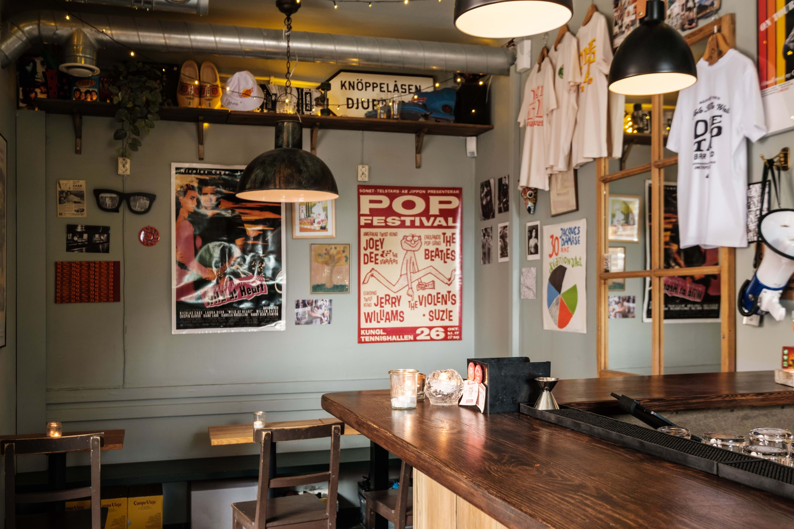
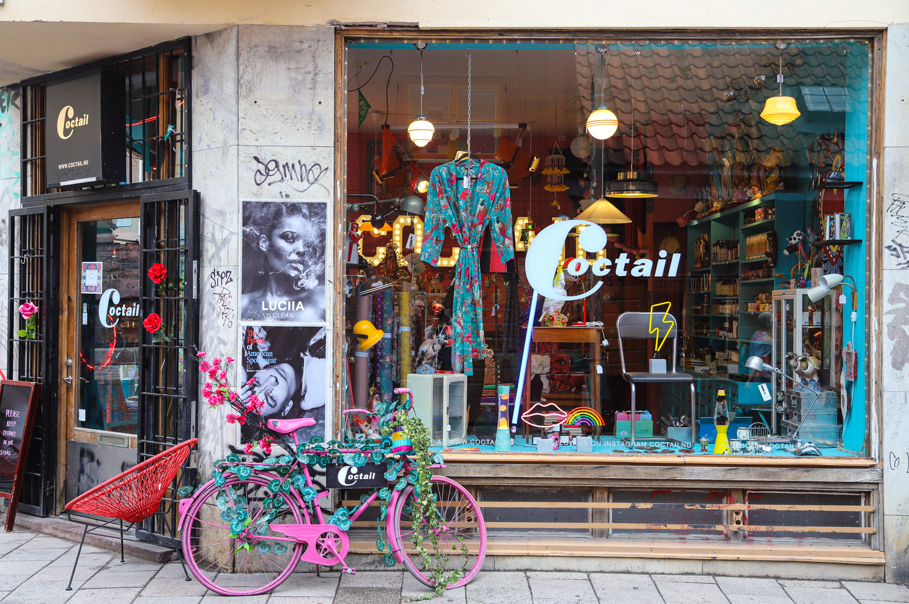

Eat
Discover the best restaurants and cafés in Södermalm.
Sample hidden gems, from vegan bistros to classic Swedish dining.
[Ad: Local restaurant here]
Drink
Bars, pubs, and late-night spots worth a visit.
From craft cocktails to cozy wine bars.
[Ad: Local bar here]
Do
Cultural experiences, shopping, and things to do.
Explore galleries, bookstores, and local design shops.
Plan your day
[Distance/time from Medborgarplatsen]